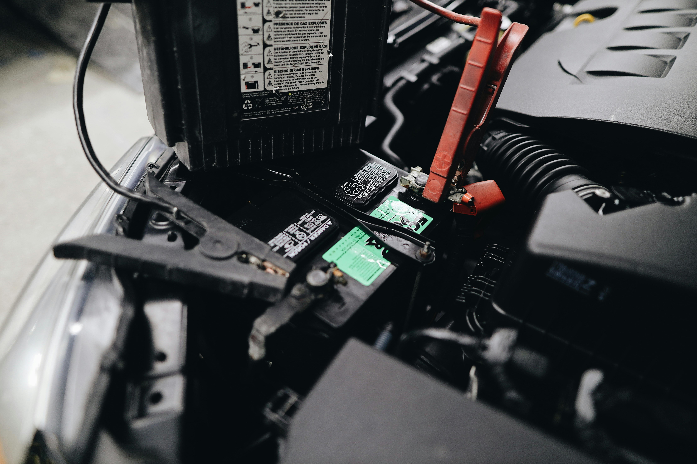

Peças de Carros
Encontre tudo que você precisa para o seu carro em um só lugar!
Filtros de Ar
Os filtros de ar são essenciais para manter o motor do seu carro funcionando corretamente. Eles removem poeira, sujeira e outras impurezas do ar que entra no motor, protegendo as peças internas e prolongando a vida útil do motor.
Comprar filtros de ar
Baterias
A bateria fornece a energia necessária para dar partida no carro e alimentar os sistemas elétricos. Escolher a bateria certa para o seu carro é importante para garantir o bom funcionamento do veículo.

Comprar baterias
Pneus
Os pneus são o único ponto de contato do seu carro com a estrada, por isso é importante escolher pneus de boa qualidade que forneçam segurança e desempenho. Existem diferentes tipos de pneus para diferentes necessidades, como pneus para neve, pneus para lama e pneus de alto desempenho.
 Comprar pneus
Comprar pneus
Freios
Os freios são um dos sistemas de segurança mais importantes do seu carro. Eles permitem que você pare o carro com segurança, mesmo em situações de emergência. É importante manter os freios do seu carro em bom estado e fazer a revisão regularmente.
 Comprar peças de freio
Comprar peças de freio